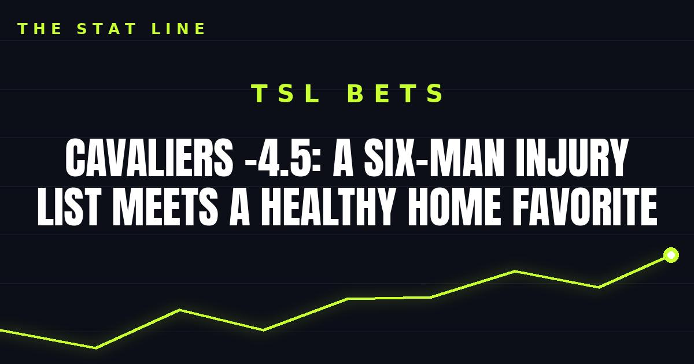

Cavaliers -4.5: A Six-Man Injury List Meets a Healthy Home Favorite
Oklahoma City is down six players, including Chet Holmgren and Jalen Williams, and comes in off two blowout losses. Cleveland at home, laying just 4.5, is the cleanest number on Monday's board.

The game slip
Matchup: Oklahoma City Thunder (4-2) at Cleveland Cavaliers (4-2)
Tipoff: Monday, November 2, 7:00 PM ET — NBC Sports Network / Peacock, Rocket Arena, Cleveland
Line: Cavaliers -4.5 | Total 228.5 | Moneyline: Cavaliers -180, Thunder +145 (via BetMGM, Monday morning)
Thunder injury report: OUT — Chet Holmgren (right knee injury recovery), Jalen Williams (left ankle surgery), Alex Caruso (right ankle sprain), Cason Wallace (left shoulder surgery), Nikola Topic (low back surgery), Thomas Sorber (right knee surgery). That is two starters, the top bench defender, and the team's defensive identity, all in street clothes.
Cavaliers injury report: OUT — Jaylon Tyson (right ankle sprain), Nae'Qwan Tomlin (low back stress reaction), Khalifa Diop (G League assignment). Questionable — Peyton Watson (right hamstring tightness). Watson is a rotation piece, not a star; the Cavs' core of James Harden, Donovan Mitchell, Evan Mobley and Jarrett Allen is intact.
Storylines driving the bet:
1. Oklahoma City has lost its last two games — to Dallas and Houston — by an average of 22.5 points, including a 119-98 loss at Houston on Saturday. This is not a slump; it is a roster running on fumes.
2. Cleveland just won 136-111 at Milwaukee on Saturday, and it gets to funnel everything through Shai Gilgeous-Alexander with Mobley and Allen waiting at the rim. The Thunder's usual answer to that problem — Jalen Williams as a secondary creator — is out.
3. The number is short for the gap in available talent. A healthy Thunder team would be favored in this building. This is not a healthy Thunder team.
The bet
Cavaliers -4.5. This is a bet on the injury report, plain and simple — and the injury report is not close. Six Thunder players out, including the two who make their defense work, against a full-strength Cavs core at home. Cleveland does not need a great shooting night to win by five; it needs a normal one, with OKC's offense running through one man and its defense missing its anchors.
The honest caveat: SGA can win a game by himself on any night, and 4.5 points is not a big number if he goes for 40. But the last two Thunder losses were not close, the help is not walking through the door tonight, and the Cavs are rested enough and deep enough to make him work for every one of those 40.
If gambling stops being fun, call 1-800-GAMBLER.
Sources: The Oklahoman — Thunder vs. Cavaliers: channel, time, odds, injury report, Fear The Sword — Cavs vs. Thunder: how to watch, odds, and injury report